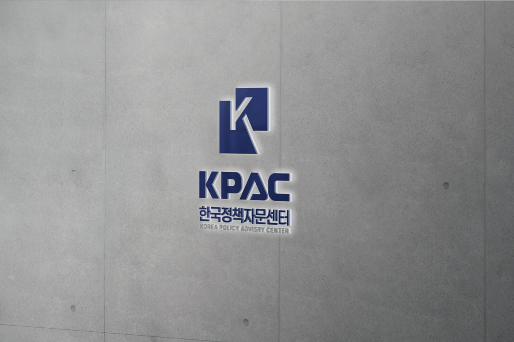

한국정책자문센터는 중소기업과 스타트업의 경영 전반을 지원하는 종합 경영자문 기관입니다. 정책자금 지원을 시작으로 세무, 지식재산권, 법률, 채권·채무, 투자유치, M&A까지 — 사업의 시작부터 성장, 엑시트까지 함께합니다.

한국정책자문센터 대표 이남인은 정책자금 컨설팅을 단발성 서비스가 아닌, 기업의 자금·투자·법률을 아우르는 종합 경영컨설팅 산업으로 만들어가고 있습니다.
수백 건의 기업 재무제표 분석과 심사 대응 경험을 바탕으로, 단순히 서류를 대행하는 것이 아니라 기업의 재무 구조 자체를 진단하고 성장 전략을 함께 설계합니다.
정책자금 컨설팅을 시작으로 기업 자금조달 자문 체계 구축
정책자금 분야 국내 유일 협회 설립, 전문가 네트워크 기반 컨설팅 체계 구축
정책자금을 넘어 경정청구·투자유치·M&A·채무조정까지 확대
누적 상담 300건 이상, 기보·신보·중진공·소진공 전 채널 대응 경험 축적